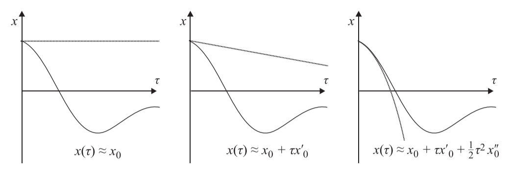

> 4 Os Modelos Geradores de Inferência Ativa
Everything should be made as simple as possible, but not simpler. —Albert Einstein
4.1 Introdução
Este capítulo complementa o tratamento conceitual da Inferência Ativa dos capítulos anteriores com um tratamento mais formal. Especificamente, estabelece a relação entre energia livre e inferência Bayesiana, a forma dos modelos generativos tipicamente usados na Inferência Ativa, e a dinâmica obtida da minimização da energia livre para esses modelos. Um foco principal é como o tempo é representado em um modelo generativo. Veremos a distinção entre modelos generativos formulados em tempo contínuo e aqueles que tratam o tempo como uma sequência de eventos. Finalmente, apresentamos a ideia de passagem de mensagens inferenciais, que subscreve teorias proeminentes em neurobiologia — incluindo codificação preditiva.
4.2 Da Inferência Bayesiana à Energia Livre
Nos dois capítulos anteriores, delineamos algumas das conexões importantes entre a Inferência Ativa e outros paradigmas estabelecidos nas neurociências. No capítulo 2, nos concentramos na noção de cérebro bayesiano (Knill e Pouget 2004, Doya 2007) – um de seus parentes mais próximos – que fornece uma maneira útil de pensar sobre algumas das consequências da inferência ativa de uma perspectiva mais formal.
Especificamente, ele nos ajuda a enquadrar os problemas que um agente envolvido na Inferência Ativa deve resolver. Em termos gerais, esses são o problema de inferir estados do mundo (percepção) e inferir um curso de ação (planejamento). Embora seja tentador igualar a otimalidade de Bayes com a inferência Bayesiana exata, a inferência exata geralmente é computacionalmente intratável ou mesmo inviável. Em aplicações de psicologia cognitiva e inteligência artificial, é comum considerar formas limitadas de inferência e racionalidade. Destacamos alguns exemplos no capítulo 3. Sob uma estrutura bayesiana, isso se traduz no uso de inferência aproximada. Esses métodos compreendem métodos de amostragem e métodos variacionais – nos quais se baseia a inferência ativa. Nesta seção, recapitulamos os elementos básicos da inferência bayesiana e suas manifestações variacionais (Beal 2003, Wainwright e Jordan 2008). Ao fazê-lo, esperamos fornecer alguma intuição para o papel da energia livre e enfatizar a importância dos modelos generativos na elaboração de inferências sobre o mundo.
Este capítulo é mais técnico do que os capítulos 1 a 3, apelando para um pouco de álgebra linear, diferenciação e expansão em série de Taylor. Os leitores interessados nos detalhes ou que precisem de uma atualização podem recorrer aos apêndices para obter os antecedentes necessários. Aqueles que não querem se aprofundar nos fundamentos teóricos podem pular este capítulo. Ao longo, explicamos as principais implicações de cada equação - para que seja possível desenvolver uma compreensão dos pontos conceituais importantes aqui, mesmo sem seguir o argumento formal.
Um bom ponto de partida é o teorema de Bayes. Lembre-se do capítulo 2 que esse teorema expressa uma igualdade entre o produto de uma verossimilhança a priori e o produto de uma verossimilhança a posteriori. Isso é reproduzido na equação 4.1:
\[P(x)P(y|x) = P(x|y)P(y)\] \[ P(y) = \sum_x P(y|x) = \sum_x P(y|x)P(x) \qquad\qquad (4.1)\]
A primeira linha da equação 4.1 é o teorema de Bayes. A segunda linha mostra que a verossimilhança marginal (ou evidência do modelo), \(P(y)\), pode ser calculada diretamente a partir do anterior e da verossimilhança.16 Isso mostra que a anterior e a verossimilhança - que juntas compõem o modelo generativo - são suficientes para calcularmos a evidência do modelo e a probabilidade posterior. Apesar disso, nem sempre é fácil fazê-lo. A soma (ou integração, se lidar com variáveis contínuas) na equação 4.1 pode ser computacionalmente ou analiticamente intratável. Uma maneira de resolver isso – o ponto de partida da inferência variacional – é converter esse problema de integração potencialmente difícil em um problema de otimização. Para entender como isso funciona, precisamos recorrer à desigualdade de Jensen, que diz que “o log 17 de uma média é sempre maior ou igual à média de um log”. A Figura 4.1 fornece uma intuição gráfica de por que esse é o caso.
Figura 4.1 Função logarítmica fornecendo intuição para a desigualdade de Jensen. Se tivéssemos apenas dois pontos de dados (\(x1\) e \(x2\)), ou poderíamos pegar sua média (\(\mathbb E[x]\)) e encontrar seu log, ou poderíamos pegar o log de cada ponto de dados e então tirar a média desses (\(\mathbb {E}[ln x]\)). Este último (\(\mathbb{E}[ln x]\)) estará sempre abaixo do primeiro (\(ln \mathbb{E}[x]\)), devido à concavidade da função logarítmica, a menos que os pontos de dados sejam os mesmos (onde o logaritmo da média e a média de o log são iguais). Essa desigualdade vale para qualquer número de pontos de dados.
Para tirar proveito dessa propriedade, podemos reescrever a equação 4.1 multiplicando o termo dentro da soma na segunda linha por uma função arbitrária (\(Q\)) dividida por ela mesma (isso é equivalente a multiplicar por um, então a igualdade ainda é válida) e tomando o logaritmo de cada lado. Matematicamente, isso não muda nada. No entanto, agora podemos interpretar a expressão como uma expectativa (\(\mathbb{E}^3\)) de uma razão entre duas probabilidades e assim explorar a desigualdade de Jensen:
\[ \ln P(y) = \ln \sum_x P(y,x){Q(x)\over Q(x)}= \ln \mathbb{E_{Q(x)}[{P(y,x)\over Q(x)}]} \ge \mathbb{E}_{Q(x)} [\ln {P(y,x) \over Q(x)}] \triangleq -F[Q,y] \qquad(4.2)\]
A segunda linha desta equação usa o fato de que temos uma expectativa logarítmica e que, pela desigualdade de Jensen, esta deve ser sempre maior ou igual à expectativa logarítmica. Esse movimento às vezes é chamado de amostragem de importância. O lado direito dessa desigualdade é conhecido como energia livre variacional (negativa):18 quanto menor a energia livre, mais próxima está da evidência do modelo logarítmico negativo. Com isso em mente, podemos reescrever o teorema de Bayes (equação 4.1) na forma logarítmica, tomar sua média sob a distribuição posterior e divulgar a relação entre isso e as quantidades da equação 4.2:
\[ \ln P(x,y) = \ln P(y) + \ln P(x|y) \Longrightarrow \] \[ \mathbb{E}_{P(x|y)} [\ln P(x,y)] = \ln P(y) + \mathbb{E}_{P(x|y)}[\ln P(x|y)] \qquad\qquad (4.3) \]
\[ \mathbb{E}_{Q(x)} [\ln P(x,y)] = \ln -F[Q,y] + \mathbb{E}_{Q(x)}[\ln Q(x)]\] A segunda linha decorre do fato de que a probabilidade logarítmica de y não é uma função de x, portanto, tomar uma expectativa sob a distribuição a posteriori não altera essa quantidade. A Equação 4.3 fornece alguma intuição para os papéis da energia livre e da distribuição Q — as duas quantidades que eram difíceis de calcular sem a aproximação variacional. A primeira desempenha o papel de evidência do modelo logarítmico negativo, enquanto a segunda atua como se fosse a probabilidade posterior. Mais formalmente, podemos reorganizar a energia livre como fizemos no capítulo 2 para quantificar a relação entre a energia livre e a evidência do modelo:
\[ F[Q,y] = \begin{matrix} \underbrace {D_{KL}[Q(x) ||P(x|y) ] } \\ divergência \end{matrix} - \begin{matrix} \underbrace {\ln P(y)} \\ Log\;da\;Evidência\;do\;modelo \end{matrix} \]
\[D_{KL}[Q(x) ||P(x|y) ] = \mathbb{E}_{Q(x)}[\ln Q(x)-\ln P(x|y)]\] A primeira linha da equação 4.4 mostra a energia livre expressa em termos de KL-Divergence e uma evidência de log negativo. A KL-Divergence é definida na segunda linha como a diferença esperada entre duas probabilidades logarítmicas. Isso é frequentemente usado como uma medida de quão diferentes duas distribuições de probabilidade são uma da outra.
Às vezes, o uso de energia livre é motivado diretamente em função dessa divergência. O argumento é que, se nosso objetivo é realizar inferência Bayesiana aproximada, precisamos encontrar um posterior aproximado que melhor corresponda ao posterior exato. Como tal, podemos selecionar uma medida da divergência entre os dois – da qual o KL-Divergence na equação 4.4 é um exemplo – e minimizá-lo. Como não sabemos o posterior exato, não podemos usar essa divergência diretamente. Uma solução é adicionar o termo de evidência logarítmica, que pode ser combinado com o logaritmo posterior para formar a probabilidade conjunta (que sabemos porque este é o modelo generativo). O resultado é a energia livre.
Uma consequência interessante dessa perspectiva é que há alguma ambiguidade sobre qual medida de divergência usar. Se quisermos fazer o posterior aproximado e exato o mais próximo possível, poderíamos usar o outro KL-Divergence, onde Q e P são trocados, ou escolher entre uma grande família de divergências, cada uma das quais enfatizando diferentes aspectos da diferença entre distribuições. No entanto, as ideias expostas no capítulo 3 destacam a importância da autoevidência para os sistemas envolvidos na Inferência Ativa. Portanto, estamos procurando principalmente um esquema de maximização de evidências tratável e apenas secundariamente procurando minimizar a divergência. Nessa perspectiva, não há ambiguidade quanto à medida de divergência a ser usada. Isso emerge do uso da desigualdade de Jensen.
4.3 Modelos Geradores
Para calcular a energia livre, precisamos de três coisas: dados, uma família de distribuições variacionais e um modelo generativo (compreendendo uma a priori e uma probabilidade). Nesta seção, descrevemos dois tipos muito gerais de modelos generativos usados para Inferência Ativa e a forma que a energia livre assume em relação a cada um. A primeira trata de inferências sobre variáveis categóricas (por exemplo, identidade do objeto) e é formulada como uma sequência de eventos. O segundo trata de inferências sobre variáveis contínuas (por exemplo, contraste de luminância) e é formulado em tempo contínuo usando equações diferenciais estocásticas. Antes de especificar os detalhes desses modelos, revisamos um formalismo gráfico que expressa as dependências implícitas em um modelo generativo.
A Figura 4.2 mostra vários exemplos de modelos generativos expressos como gráficos de fatores, escolhidos para fornecer alguma intuição para os tipos de coisas que podem ser articuladas dessa maneira. Estes representam os fatores (por exemplo, anterior e probabilidade) de um modelo generativo como quadrados e as variáveis nesse modelo (estados ou dados ocultos) em círculos. As setas indicam a direção da causalidade entre essas variáveis. O gráfico superior esquerdo mostra a forma mais simples que esses modelos podem assumir, com um estado oculto \((x)\) causando dados \((y)\). A priori neste modelo é mostrada como fator 1, e a probabilidade é fator 2. Os outros gráficos estendem essa ideia introduzindo variáveis adicionais. No canto superior direito, z desempenha o papel de um segundo estado oculto, de modo que y depende dos estados de x e z.
Como exemplo, considere um teste de diagnóstico clínico. Nesse cenário, o gráfico simples no canto superior esquerdo pode ser interpretado como a presença ou ausência de uma doença \((x)\) e o resultado do teste \((y)\). O prior é então a prevalência da doença, enquanto a probabilidade especifica as propriedades do teste. Estes incluem sua especificidade (a probabilidade de um resultado negativo na ausência da doença) e a sensibilidade (a probabilidade de um resultado positivo na presença da doença). Podemos então pensar no modelo em termos do mecanismo pelo qual um resultado de teste é obtido – indo de cima para baixo no gráfico de fatores. Primeiro, amostramos uma pessoa de uma população com prevalência conhecida de uma doença. Se eles tiverem a doença, eles gerarão um resultado de teste positivo verdadeiro com probabilidade dada pela sensibilidade do teste e um falso negativo caso contrário. Caso não tenham a doença, gerarão um verdadeiro negativo com probabilidade dada pela especificidade, e um falso positivo caso contrário.
Figura 4.2 Dependências entre variáveis em um modelo probabilístico (gráfico). Os círculos representam variáveis aleatórias (ou seja, as coisas sobre as quais temos crenças); os quadrados representam as distribuições de probabilidade que descrevem as relações entre essas variáveis. Uma seta de um círculo para outro através de um quadrado indica que a variável do segundo círculo depende daquela do primeiro círculo e que essa dependência é capturada na distribuição de probabilidade representada pelo quadrado.
Seguindo o mesmo exemplo, podemos interpretar os outros gráficos de fatores. No painel superior direito, \(x\) e \(z\) poderia ser a presença ou ausência de duas doenças diferentes, qualquer uma das quais poderia dar um resultado de teste positivo. No canto inferior esquerdo, \(w\) desempenha o papel de dados. Ambos \(y\) e \(w\) são gerados por \(x\) e podem representar (por exemplo) dois testes diagnósticos diferentes que são informativos sobre o mesmo processo de doença. Finalmente, o gráfico inferior direito trata \(x\) e \(v\) como estados ocultos, mas introduz uma estrutura hierárquica na qual \(v\) causa \(x\) causa \(y\). Aqui poderíamos pensar em \(v\) como fornecendo um contexto ou um fator predisponente (por exemplo, polimorfismo genético) para a presença ou ausência da doença x, que pode ser testada medindo y. Em princípio, podemos adicionar um número arbitrário de variáveis a essa hierarquia.
Modelos generativos desse tipo são frequentemente usados para tarefas perceptivas estáticas, como reconhecimento de objetos ou integração de pistas. Os modelos generativos usados para inferência ativa diferem de uma maneira importante: eles evoluem ao longo do tempo à medida que novas observações são amostradas, e as observações que são adicionadas dependem (via ação) de crenças sobre variáveis no modelo. Isso tem duas implicações principais. Primeiro, as dependências condicionais incluem as dependências de variáveis ocultas em um determinado momento daquelas em momentos anteriores. Em segundo lugar, esses modelos às vezes incluem hipóteses sobre “como estou agindo” como variáveis ocultas.
A Figura 4.3 ilustra as duas formas básicas do modelo generativo dinâmico usado na inferência ativa (Friston, Parr e de Vries 2017) na forma de gráfico fatorial (Loeliger 2004, Loeliger et al. 2007). O gráfico superior mostra um Processo de Decisão Markov Parcialmente Observável (POMDP), que expressa um modelo no qual uma sequência de estados evolui ao longo do tempo. A cada passo de tempo, o estado atual é condicionalmente dependente do estado no momento anterior e da política (π ) que está sendo seguida. As políticas aqui podem ser pensadas como indexadoras de trajetórias alternativas, ou sequências de ações, que poderiam ser seguidas. Cada ponto no tempo está associado a uma observação (o) que depende apenas do estado naquele momento. Esse tipo de modelo é muito útil para lidar com tarefas de planejamento sequencial – por exemplo, navegar em um labirinto (Kaplan e Friston 2018) – ou processos de tomada de decisão que envolvem a seleção entre alternativas (por exemplo, categorização de uma cena [Mirza et al. 2016 ]).
Figura 4.3 Dois modelos generativos dinâmicos (usando a mesma notação gráfica da figura 4.2) aos quais recorreremos no restante deste livro. Topo: Processo de Decisão Markov Parcialmente Observável (POMDP), definido em termos de uma sequência de estados evoluindo ao longo do tempo (indexados pelo subscrito). Abaixo: Modelo de tempo contínuo, do tipo implícito por equações diferenciais estocásticas (com a notação principal indicando derivadas temporais).
O gráfico inferior na figura 4.3 mostra um modelo gráfico muito semelhante, mas expresso em tempo contínuo. Em vez de representar uma trajetória como uma série de estados, este modelo representa a posição atual, velocidade e aceleração (e sucessivas derivadas temporais) de um estado (x). Esses valores (referidos como coordenadas generalizadas de movimento) podem ser usados para reconstruir uma trajetória usando uma expansão em série de Taylor (consulte o apêndice A para uma introdução às aproximações em série de Taylor neste contexto). A relação entre um estado e sua derivada temporal aqui depende de (lentamente variando) causas (v) que desempenham um papel semelhante às políticas acima. Como antes, os estados geram observações ( y). A diferença de notação (s, π, o vs. x, v, y) é usada para enfatizar a diferença entre variáveis categóricas que evoluem em tempo discreto e variáveis contínuas que evoluem em tempo contínuo. Da mesma forma, daqui em diante, usaremos p e q minúsculo para densidades de probabilidade sobre variáveis contínuas e P e Q maiúsculo para distribuições sobre variáveis categóricas. As Seções 4.4 e 4.5 descompactarão esses modelos com mais detalhes e mostrarão como a minimização da energia livre em cada caso leva a um conjunto de equações que descrevem a dinâmica dos processos inferenciais.
4.4 Inferência ativa em tempo discreto
Nesta seção, focamos no modelo de tempo discreto descrito acima. Isso é importante para entender uma série de processos cognitivos que lidam com inferências categóricas e seleção entre hipóteses alternativas. Esse formalismo também facilita o exame do problema clássico de prospecção-aproveitamento e ilustra como a inferência ativa resolve isso.
4.4.1 Processos de Decisão Markov Parcialmente Observáveis
Conforme mostrado na figura 4.3, um POMDP expressa a evolução ao longo do tempo de uma sequência de estados ocultos que dependem de uma política. Para especificar formalmente esse processo, precisamos levar em conta a forma de cada um dos nós de fator quadrado na figura. Primeiro, descrevemos cada um desses fatores. Em seguida, nós os combinamos para expressar a distribuição conjunta que constitui o modelo generativo.
Assim como no exemplo simples da regra de Bayes dado no capítulo 2, podemos separar os fatores entre aqueles que representam uma probabilidade e aqueles que se combinam para formar uma a priori. A probabilidade é semelhante à usada anteriormente e expressa a probabilidade de um resultado (observável) dado um estado (oculto). Se os resultados e os estados são variáveis categóricas, a probabilidade é uma distribuição categórica, parametrizada por uma matriz, A:
\[P(o_\tau|s_\tau)=Cat(A)\] \[A_{ij}=P(o_\tau=i | s_\tau = j) \qquad \qquad (4.5)\] A segunda linha aqui detalha o que significa a notação Cat (ou seja, especificação de uma distribuição categórica). Isso representa os nós rotulados como “2” na figura 4.3. A prioridade sobre a sequência (expressa usando o símbolo ~) de estados ocultos depende de duas coisas: a anterior sobre o estado inicial (especificado por um vetor, D) e crenças sobre como o estado em um momento transita para o estado seguinte ( especificado como uma matriz, B):
\[P(\tilde S|\pi)=P(S_1)\prod P(S_{\tau+1 | S_{\tau}}, \pi)\] \[P(S_1)=Cat(D) \qquad\qquad\qquad\qquad(4.6)\] \[P(S_{\tau+1}|S_\tau,\pi)=Cat(B_{\pi\tau})\]
Juntos, eles representam os “3” nós na figura 4.3. Observe que as transições são condicionalmente dependentes da política escolhida. Assim, podemos interpretar as prioris da equação 4.6, combinadas com a verossimilhança da equação 4.5, como expressando um modelo (π ) de uma sequência comportamental. Para nos permitir selecionar entre esses modelos (ou seja, para formar um plano), precisamos de uma crença prévia sobre a sequência mais provável. Para uma criatura minimizadora de energia livre, uma priorização autoconsistente é que as políticas mais prováveis são aquelas que levarão à menor energia livre esperada (G) no futuro:
\[P(\pi)=Cat(\pi_0)\] \[\pi_0=\sigma(-G) \qquad\qquad\qquad\qquad\qquad (4.7)\] \[G_\pi = G(\pi)=-\mathbb{E_\tilde Q[D_{KL}[Q(\tilde s|\tilde o, \pi) || Q(\tilde s| \pi)]]}-\mathbb{E_\tilde Q[\ln P(\tilde o|C)]}\] \[\tilde Q(o_\tau, s_\tau | \pi) \triangleq P(o_\tau |s_\tau)Q(s_\tau | \pi)\]
Esta equação, sendo de fundamental importância para a Inferência Ativa, vale a pena descompactar com mais profundidade. As duas primeiras linhas expressam a probabilidade a priori para cada política, conforme parametrizada por \(\pi_0\), como sendo relacionada à energia livre esperada negativa associada àquela política . A função softmax \((\sigma)\) impõe normalização (ou seja, garante que a probabilidade sobre as políticas soma um)
As duas linhas finais da equação 4.7 expressam a forma da energia livre esperada.
Observe a semelhança entre isso e a forma funcional da energia livre (equação 4.4) - com uma probabilidade logarítmica de resultados e uma KL-Divergência. A principal diferença aqui é que a expectativa é tomada em relação à densidade preditiva posterior conforme definida pela igualdade final. Essa distribuição expressa uma probabilidade conjunta sobre estados e observações futuras. Fundamentalmente, isso significa que podemos calcular a energia livre esperada no futuro – algo que não poderíamos fazer com a energia livre variacional, que depende de observações (presentes e passadas). Além disso, observe que a distribuição sobre os resultados depende dos parâmetros (C ) e da reversão do sinal da KL-Divergência, que é consequência da expectativa sob a probabilidade preditiva posterior. Este último ponto pode causar alguma confusão, por isso vale a pena explicar explicitamente por que isso acontece. No contexto da energia livre variacional, a KL-Divergência foi a diferença esperada entre a probabilidade logarítmica do posterior aproximado e a probabilidade logarítmica do posterior exato (equação 4.4). O termo análogo na energia livre esperada é a diferença esperada entre o posterior aproximado e o posterior exato que obteríamos com base em toda a trajetória de resultados, usando crenças posteriores atuais como se fossem anteriores. Descompactando isso, temos o seguinte:
\[\mathbb E[\ln Q(\tilde s | \pi) - \ln Q(\tilde s | \tilde o, \pi) ]\] \[= \mathbb E_{Q(\tilde o|\pi)}[ \mathbb E_{Q(\tilde s | \tilde o,\pi)}[\ln Q(\tilde s|\pi) - \ln Q(\tilde s|\tilde o, \pi) ] ]\]
\[= \mathbb E_{Q(\tilde o|\pi)}[ \mathbb E_{Q(\tilde s | \tilde o,\pi)}[\ln Q(\tilde s|\tilde o,\pi) - \ln Q(\tilde s| \pi) ] ] \qquad\qquad\qquad\qquad (4.8)\]
\[= - \mathbb E_{Q(\tilde o|\pi)}[D_{KL}[Q(\tilde s | \tilde o, \pi) || Q(\tilde s| \pi)]]\]
Aqui vemos que a ordem em que as expectativas devem ser tomadas é importante.
Ele provoca uma inversão de sinal em relação ao termo análogo na energia livre variacional. Isso subscreve uma diferença importante entre as duas quantidades. A energia livre esperada é minimizada selecionando aquelas observações que causam uma grande mudança nas crenças, em contraste com a energia livre variacional que é minimizada quando as observações obedecem às crenças atuais. Essa é a diferença entre otimizar as crenças em relação aos dados que já foram coletados (minimização variacional de energia livre) e selecionar os dados que melhor otimizarão as crenças (minimização de energia livre esperada).
Isso reitera que a Inferência Ativa usa dois construtos, energia livre variacional (F ) e energia livre esperada (G), que são matematicamente relacionados, mas desempenham papéis distintos e complementares. A energia livre variacional é a quantidade primária que é minimizada ao longo do tempo. Ele é otimizado em relação a um modelo generativo, que pode incluir políticas (ou sequências de ações). Assim como em todos os outros estados ocultos, o agente precisa atribuir uma probabilidade anterior às políticas - porque as políticas são apenas mais uma variável aleatória no modelo generativo. A Inferência Ativa usa uma priori que é (vagamente falando) equivalente à crença de que se minimizará a energia livre no futuro: ou seja, a energia livre esperada. Em outras palavras, a energia livre esperada fornece uma prioridade sobre as políticas e, portanto, é um pré-requisito para minimizar a energia livre variacional.
No capítulo 2 vimos que, assim como a energia livre variacional, a energia livre esperada pode ser rearranjada de várias maneiras para revelar várias interpretações. Aqui, nos concentramos em uma interpretação como a diferença entre o risco e a ambiguidade associada a uma política. Isso é equivalente à expressão na equação 4.7:
$$$$
\[G(\pi)=\begin{matrix} \underbrace{-\mathbb{E_\tilde Q}[D_{KL}[Q(\tilde S | \tilde o, \pi)||Q(\tilde S | \pi)]]} \\ ganho\;de\;informação \end{matrix} - \begin{matrix} \underbrace{-\mathbb{E_\tilde Q}[\ln P(\tilde o | C)]} \\ valor\;pragmático \end{matrix} \qquad \qquad \qquad (4.9)\]
\[\begin{matrix} \underbrace{\mathbb{E_\tilde Q}[H[P(\tilde o|\tilde s)]]} \\ ambiguidade\;esperada \end{matrix} + \begin{matrix} \underbrace{D_{KL}[Q(\tilde o | \pi) || P(\tilde o | C)]} \\ risco \end{matrix}\]
Lembre-se do capítulo 2 que o primeiro deles expressa o trade-off entre buscar novas informações (ou seja, prospecção) e buscar observações preferidas (ou seja, aproveitamento). Ao minimizar a energia livre esperada, o equilíbrio relativo entre esses termos determina se o comportamento é predominantemente exploratório ou explorador. Observe que o valor pragmático surge como uma crença prévia sobre observações, onde os parâmetros C dessa distribuição podem ser escolhidos para refletir o tipo de sistema que estamos interessados em caracterizar (em termos de suas características ou estados de resultado preferidos). Seguindo a segunda linha da equação 4.9, podemos reescrever a equação 4.7 na forma algébrica linear da seguinte forma:
\[\pi_o = \sigma(-G)\] \[G_\pi = H\cdot s_{\pi\tau} + o_{\pi\tau} \cdot \varsigma_{\pi\tau}\]
\[\varsigma_{\pi\tau} = \ln o_{\pi\tau} - \ln C_\tau \] \[H = -diag(A \cdot \ln A)\]
\[P(o_\tau | C) = Cat(C_\tau) \qquad \qquad (4.10)\]
\[Q(o_\tau | \pi) = Cat(o_{\pi\tau}) , o_{\pi\tau} = As_{\pi\tau} \]
\[Q(S_\tau|\pi)=Cat(s_{\pi\tau})\] \[Q(S_\tau)=Cat(S_\tau) , s_\tau = \sum_\pi \pi_\pi s_{\pi\tau} \] A primeira linha da equação 4.10 usa um operador softmax (exponencial normalizado) para construir uma distribuição de probabilidade (parametrizada com estatísticas suficientes \(π_0\) que soma um do vetor de energia livre esperado. As linhas dois a quatro expressam os componentes da energia livre esperada em notação algébrica linear. A quinta linha mostra que a crença prévia sobre as observações é uma distribuição categórica (cujas estatísticas suficientes são dadas no vetor C). A sexta a oitava linhas especificam a relação entre as quantidades algébricas lineares e as distribuições de probabilidade associadas. Concluída a especificação do modelo generativo, podemos agora expressar a energia livre em função das variáveis acima:
\[F = \pi \cdot F \] \[F_\pi = \sum_\tau F_{\pi\tau} \qquad\qquad\qquad (4.11)\] \[F_{\pi\tau}=s_{\pi\tau} \cdot (\ln s_{\pi \tau} - ln A \cdot o_\tau - \ln B_{\pi\tau}s_{\pi\tau-1})\] A decomposição disso em uma soma ao longo do tempo é devido à aproximação implícita de campo médio que assume que podemos fatorar o posterior aproximado em um produto de fatores:
\[Q(\tilde s | \pi) = \prod_\tau Q(s_\tau|\pi)\] Na forma logarítmica, isso se torna uma soma, assim como na equação 4.11. Essa fatoração é uma das muitas possibilidades na inferência variacional – e representa a opção mais simples. Na prática, isso é muitas vezes ligeiramente matizado, conforme detalhado no apêndice B.
4.4.2 Inferência ativa em um POMDP
Até agora, definimos os quatro ingredientes principais para um modelo generativo de tempo discreto. Estas são a probabilidade \((A)\), probabilidades de transição \((B)\), crenças anteriores sobre observações \((C)\) e crenças anteriores sobre o estado inicial \((D)\). Uma vez que essas distribuições de probabilidade são especificadas, um esquema genérico de passagem de mensagens pode ser empregado para minimizar a energia livre e resolver o POMDP. Para fazer inferências sobre estados ocultos sob uma determinada política, definimos a taxa de variação de uma variável auxiliar \((v)\), que representa o log posterior \((s)\), igual ao gradiente de energia livre negativo. Uma função softmax (exponencial normalizada) é então usada para calcular \(s\) de \(v\).
\[s_{\pi\tau}=\sigma(v_{\pi\tau})\]
\[\dot v_{\pi\tau} =\epsilon_{\pi\tau} \triangleq - \nabla F_{\pi\tau} \qquad (4.13)\]
\[ =\ln A \cdot o_\tau + ln B_{\pi\tau}s_{\pi\tau-1} + \ln B_{\pi\tau+1} \cdot s_{\pi\tau-1} - \ln s_{\pi\tau} \]
A Equação 4.13 pode ser considerada como um exemplo de passagem de mensagens variacional (ver caixa 4.1). Para atualizar crenças sobre políticas, encontramos a posterior que minimiza a energia livre:
\[ \nabla_\pi F = 0 \Longleftrightarrow \qquad \qquad (4.14)\]
\[ \pi = \sigma(-G-F)\]
Para a forma mais simples de POMDP, as equações 4.13 e 4.14 podem ser usadas para resolver um problema de Inferência Ativa para qualquer conjunto de matrizes de probabilidade; estes podem ser pensados como descrevendo percepção e planejamento, respectivamente. Vamos destrinchar isso com mais detalhes na segunda parte do livro, onde forneceremos exemplos trabalhados de Inferência Ativa para percepção e planejamento (e outras funções cognitivas).
As representações gráficas da Figura 4.4 das equações 4.10, 4.13 e 4.14 sugerem possíveis implementações neuronais de minimização de energia livre no cérebro – se interpretarmos nós como populações neuronais, bordas como sinapses e mensagens como trocas sinápticas. Em capítulos posteriores, consideraremos a extensão disso para espaços de estados fatorados, modelos temporais profundos e a otimização dos parâmetros do próprio modelo generativo (aprendizagem).
4.5 Inferência Ativa em Tempo Contínuo
Na seção anterior, tratamos da forma que a Inferência Ativa assume sob uma escolha particular de modelo generativo. Esses POMDPs são uma maneira útil de articular uma série de problemas de inferência, incluindo aqueles que subscrevem o planejamento e a tomada de decisões. No entanto, quando se trata de interagir com um ambiente real, os modelos descritos em tempo discreto com variáveis categóricas ficam aquém. Isso ocorre porque as entradas sensoriais e as saídas motoras são variáveis em constante evolução. Para explicar isso, agora nos voltamos para um tipo diferente de modelo generativo. Aplicamos exatamente a mesma ideia, um gradiente descendente na energia livre variacional, a esses modelos para encontrar os esquemas de passagem de mensagens análogos.
| Quadro 4.1 Transmissão e inferência de mensagens |
|---|
| Envoltórios de Markov Encontramos o conceito de um envoltório de Markov no capítulo 3. No entanto, vale a pena revisar brevemente a ideia aqui. Refere-se a um sistema de múltiplas variáveis que interagem. Um envoltório de Markov para uma determinada variável compreende um subconjunto daquelas que interagem com ela. Se sabemos tudo sobre esse subconjunto, o conhecimento de qualquer coisa fora desse subconjunto não aumenta nosso conhecimento da variável de interesse. A relevância aqui é que podemos fazer inferências sobre uma variável em um modelo gráfico com base em informações locais sobre seu envoltório de Markov. O envoltório de uma variável \(x\) são aquelas variáveis que causam \(x\) ( pais, \(ρ(x)\)), as variáveis que são causadas por \(x\) (filhos, \(κ (x)\)) e os pais dos filhos de \(x\). Usando esta notação, dois dos esquemas Bayesianos de passagem de mensagens mais comuns usados para inferência aproximada são definidos da seguinte forma: Passagem de mensagem variacional\[ \ln Q(x)=\mathbb{E}_{Q(\rho(x))}[\ln P(x|\rho(x))]+\mathbb{E}_{\frac {Q(\kappa (x))Q(\rho(\kappa (x)))}{Q(x)}}[\ln P( \kappa (x) | \rho(\kappa (x)))]\]Isso envolve mensagens de todos os constituintes do envoltório de Markov de \(x\), incluindo os pais (através da probabilidade condicional de \(x\) dado seus pais) e os filhos. O último depende da probabilidade condicional dos filhos de \(x\) dados todos os seus pais – que incluem \(x\). Observe que a expectativa inclui os filhos e os pais das crianças. Como os pais das crianças incluem \(x\), dividimos por \(Q(x)\) para garantir que a expectativa inclua apenas o envoltório. Propagação de crenças\[\ln Q(x) = \ln \mu_\kappa(x) + \ln \mu_\rho(x) \] \[\mu_\kappa(x)=\mathbb{E_{\frac{\mu_\kappa(\kappa(x))\mu_\rho(\kappa(x))}{\mu_x(\kappa(x))}}}[P( \kappa(x) | \rho(\kappa(x)) )]\]\[\mu_\rho(x)=\mathbb{E_{\frac{\mu_\rho(\rho(x))\mu_\kappa(\rho(x))}{\mu_x(\rho(x))}}}[P( x | \rho(x) )]\]Isso tem basicamente a mesma estrutura que a passagem de mensagens variacional, mas usa uma definição recursiva de mensagens tal que cada mensagem \(μ_a(b)\) sendo a mensagem de \(a\) para \(b\) ) depende de outras mensagens (as mensagens para \(a\)). Há um aspecto direcional nisso, de modo que a mensagem de \(a\) para \(b\) depende de todas as mensagens para \(a\), exceto a de \(b\) (daí a divisão nas expectativas). NB: O uso ligeiramente fora do padrão do operador de expectativa aqui nos permite (1) cobrir variáveis discretas e contínuas e (2) destacar as semelhança entre a passagem de mensagens variacional e a propagação de crenças. |
Figura 4.4 Passagem de mensagens bayesianas. Direita: Dependências entre diferentes variáveis no esquema de atualização de crenças descrito no texto principal. Intuitivamente, as crenças atuais sobre os estados (sob cada política) em cada momento são comparadas com aquelas que seriam previstas dadas as crenças sobre os estados em outros momentos (1) e os resultados atuais para calcular os erros de previsão. Esses erros então impulsionam a atualização dessas crenças (2); dadas crenças sobre estados sob cada política, podemos então calcular os gradientes da energia livre esperada (3). Estes são combinados com os resultados previstos em cada política (omitidos da figura) para calcular as crenças sobre as políticas (4). Usando uma média do modelo Bayesiano, podemos então calcular as crenças posteriores sobre os estados calculados sobre as políticas (5). Este resumo de alto nível da passagem de mensagens omite algumas conexões intermediárias que podem ser incluídas (por exemplo, a conexão (4) pode ser descompactada para incluir explicitamente o cálculo da energia livre esperada). Esquerda: Este esquema pode ser expandido hierarquicamente (reduzindo ao longo de etapas de tempo e políticas para simplificar). A ideia-chave é que uma rede de nível superior pode prever os estados e políticas no nível inferior e usá-los para fazer inferências sobre o contexto em que ocorrem. Descompactaremos essa ideia mais adiante no capítulo 7.
4.5.1 Um modelo generativo para codificação preditiva
Para motivar a forma de modelo generativo usado para estados contínuos, começamos com o seguinte par de equações:
\[ \begin{matrix} \dot x = f(x,v) + \omega_x \\ y = g (x,v) + \omega_y \end{matrix} \qquad\qquad\qquad\qquad (4.15) \] A primeira delas expressa a evolução de um estado oculto ao longo do tempo, segundo uma função determinística \(( f (x, v))\) e flutuações estocásticas \((ω)\). A segunda equação expressa a maneira pela qual os dados são gerados a partir do estado oculto. Em cada caso, as flutuações são assumidas normalmente distribuídas, dando as seguintes densidades de probabilidade para a dinâmica e a probabilidade:
\[ \begin{matrix} \rho(\dot x | x,v) = N(f(x,v, \prod_x)) \\ \rho(y | x,v) = N(g(x,v, \prod_y)) \end{matrix} \qquad\qquad\qquad\qquad (4.16) \]
Os termos de precisão \((\prod)\) são a covariância inversa das flutuações. Essas duas equações formam o modelo generativo que escreve os filtros de Kalman-Bucy na engenharia. No entanto, esquemas desse tipo são limitados pela suposição de flutuações não correlacionadas ao longo do tempo (ou seja, suposições de Wiener). Isso é inadequado para inferência em sistemas biológicos, onde as próprias flutuações são geradas por sistemas dinâmicos e têm um grau de suavidade. Podemos explicar isso considerando não apenas a taxa de mudança do estado oculto e o valor atual dos dados, mas também suas velocidades, acelerações e derivadas temporais subsequentes – isto é, coordenadas generalizadas de movimento (Friston, Stephan et al. 2010; ver quadro 4.2):
| Quadro 4.2 Coordenadas generalizadas de movimento |
|---|
| Figura 4.5 Para representar uma trajetória em tempo contínuo, as coordenadas generalizadas de movimento fornecem uma parametrização simples. Isso é baseado em uma expansão polinomial (série de Taylor) em torno do tempo presente para fornecer uma função que nos permite extrapolar para o passado recente e futuro próximo. Os gráficos na figura 4.5 mostram uma trajetória em algum espaço \((x)\) ao longo do tempo \((\tau)\) como uma linha contínua. Da esquerda para a direita, mostram a trajetória representada em coordenadas generalizadas de movimento com uma, duas e três coordenadas (derivadas temporais sucessivas de x). Esta é a linha tracejada. A expansão aqui é em torno do ponto de tempo inicial. Com cada coordenada generalizada sucessiva, obtemos uma aproximação mais precisa da trajetória para o futuro proximal. Para a maioria das aplicações, cerca de seis coordenadas generalizadas são suficientes. |
\[ \begin{matrix} \dot x = f(x,v) + \omega_x & \qquad \qquad y = g(x,v) + \omega_y \\ \dot x' = f'(x',v') + \omega'_x & \qquad \qquad y' = g'(x',v') + \omega'_y \\ \dot x'' = f''(x'',v'') + \omega''_x & \qquad \qquad y'' = g''(x'',v'') + \omega''_y \\ \vdots & \vdots \\ \dot x^{[i]} = f^{[i]}(x^{[i]},v^{[i]}) + \omega^{[i]}_x & \qquad \qquad y^{[i]} = g^{[i]}(x^{[i]},v^{[i]}) + \omega^{[i]}_y \\ \vdots & \vdots \end{matrix} \qquad\qquad\qquad\qquad (4.17) \] Essas coordenadas generalizadas podem ser resumidas de forma mais sucinta ao representar uma trajetória (novamente usando o símbolo ~) como um vetor com elementos correspondentes às derivadas sucessivas acima:
\[\left . \begin{matrix} D\tilde x = \tilde f(\tilde x,\tilde v) + \tilde \omega_x \\ \tilde y = \tilde g(\tilde x,\tilde v) + \tilde \omega_y \end{matrix} \right \} \Longrightarrow \begin{matrix} p(\tilde x |\tilde v) = N(D \cdot \tilde f, \tilde \prod_x) \\ p(\tilde y |\tilde x,\tilde v) = N( \tilde g, \tilde \prod_y) \end{matrix} \qquad (4.18) \] Na equação 4.18, \(D\) é uma matriz com uns acima da diagonal principal e zeros em outros lugares. Isso efetivamente desloca todos os elementos do vetor para cima e pode ser considerado um operador derivativo. As matrizes de precisão generalizadas podem ser construídas com base na suavidade que assumimos para as flutuações, conforme detalhado no apêndice B. Equipado com uma a priori sobre a causa oculta \((v)\), cuja relevância ficará mais clara a seguir, isso nos permite escrever as energia livre para este modelo generativo:
\[ \begin{matrix} F[\mu,y] & = & -\ln p(\tilde y, \tilde \mu_x , \tilde \mu_v) \\ & = & \frac{1}{2}\tilde \epsilon \cdot \tilde \prod \tilde \epsilon \\ & = & \frac{1}{2}(\tilde \epsilon_y \cdot \tilde \prod_y \tilde \epsilon_y + \tilde \epsilon_x \cdot \tilde \prod_x \tilde \epsilon_x + \tilde \epsilon_v \cdot \tilde \prod_v \tilde \epsilon_v ) \\ \tilde \epsilon & = & \epsilon \\ \prod & = & prod \end{matrix} \qquad \qquad \qquad (4.19)\]
\[\begin{matrix} a \\ b \\ c \end{matrix}\]
Aqui e ao longo do capítulo, o condicionamento ao modelo é deixado implícito; portanto, a evidência do modelo é escrita como \(P(y)\) e não \(P(y|m)\).↩︎
Tecnicamente, isso é verdade para qualquer função côncava, mas estamos preocupados apenas com logaritmos aqui.↩︎
Neste livro, seguimos a convenção do físico em que a energia livre é um limite superior na evidência de log negativo. No entanto, outras disciplinas (incluindo estatística e aprendizado de máquina) usam a energia livre negativa como um limite inferior de evidência (ou ELBO). Estes são completamente equivalentes, mas podem causar alguma confusão na pesquisa interdisciplinar.↩︎